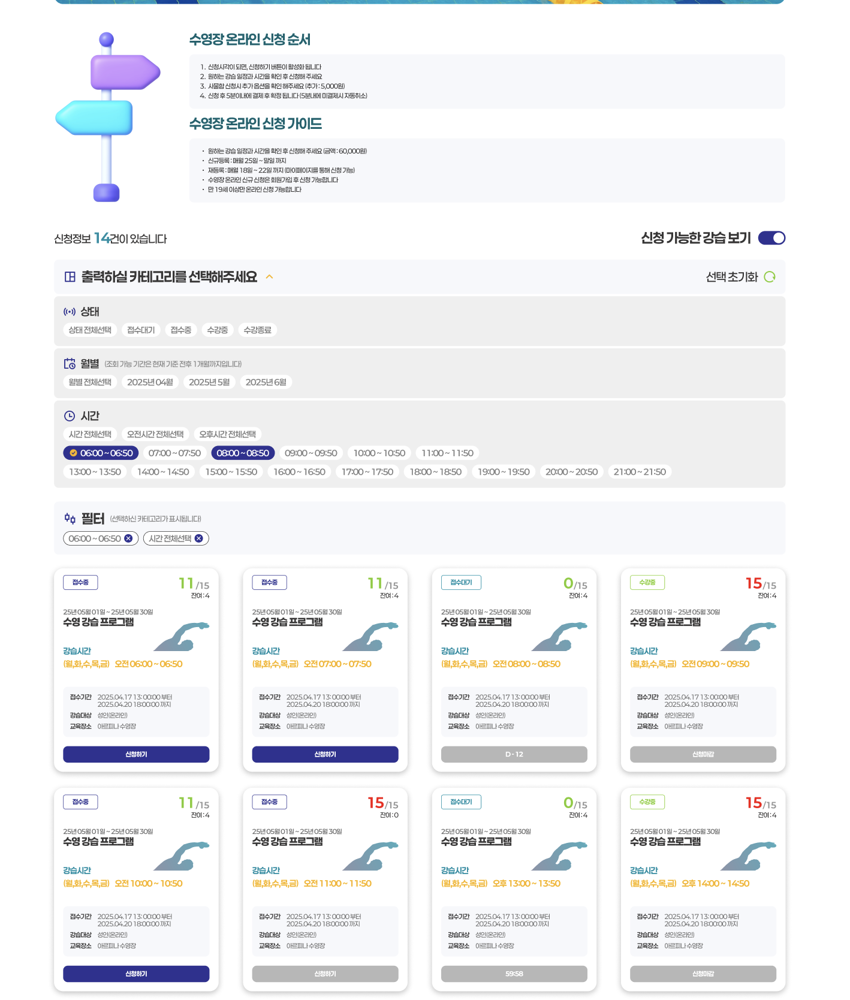
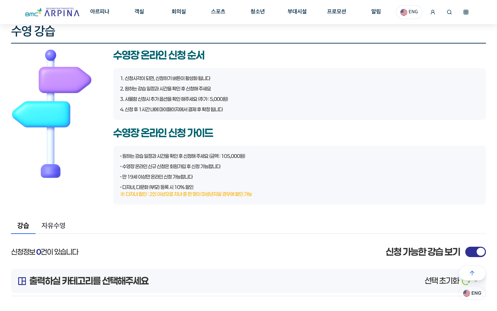
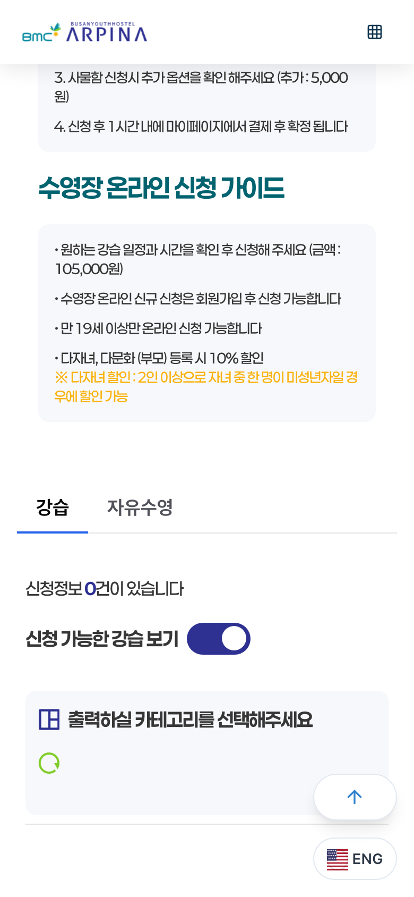

Case 01 아르피나 수영장 온라인 신청 · 핸디 · 2024.10 – 2025.01
새벽 줄서기를,온라인 접수 정책으로.
새벽부터 현장에 줄을 서던 수영장 강습 접수를 온라인 신청·결제·취소·환불로 옮기고, 홈페이지 전면 개편과 관리자 CMS까지 함께 만든 프로젝트입니다. 기존 회원과 신규 회원의 요구가 부딪히는 자리에서 접수 정책을 직접 제안했습니다.
- 기간
- 약 3개월 · 2024.10 – 2025.01
- 팀
- 4인 — PO/PM · 기획 · UI · QA
- 내 역할
- 서비스기획 · 접수 정책 설계 · IA · 화면설계 · Figma UI · QA
- 범위
- 홈페이지 전면 개편 · 온라인 신청·결제·취소·환불 · 관리자 CMS · 회원 데이터 이관
- 지금
- arpina.co.kr 신청 페이지 운영 화면
01
선착순이 부딪히는 자리
접수를 온라인으로 옮기면 새벽 줄은 사라집니다. 대신 온라인 선착순이 새로운 충돌을 만듭니다. 오래 다닌 회원은 계속 다닐 수 있기를 바랐고, 신규 회원은 공평한 기회를 원했습니다. 운영 쪽도 기존 회원을 지키고 싶어 했고, 온라인 가입이 어려운 고령 이용자도 많았습니다.
한쪽만 고르면 다른 쪽의 민원이 됩니다. 화면보다 먼저 정책이 필요한 자리였습니다.
02
두 레인으로 나누다
직접 제안한 구조입니다. 이용 이력이 있는 회원과 온라인 가입이 어려운 고령 이용자는 관리자가 사전 등록하고, 신규 회원보다 먼저 신청할 수 있는 기간을 둡니다. 신규 회원은 회원가입 뒤 그다음 선착순으로 신청합니다.
사전등록은 관리자 화면의 업무가 되고, 선착순의 공평함은 신규 레인 안에서 그대로 유지됩니다. 두 요구를 한 줄에서 겨루게 하지 않고, 줄을 둘로 나눈 것입니다.
기존 회원이용 이력 · 고령 이용자 포함
관리자 사전등록우선신청 기간결제 · 연장
신규 회원
회원가입이후 선착순 신청온라인 결제
정책 흐름은 설명용으로 재구성한 것 · 파란 테두리는 기존 회원 레인에만 있는 단계
Design 직접 디자인한 Figma 시안
상태·시간을 선택하고 강습별 정원과 신청 가능 여부를 비교하도록 설계했습니다. 아래 날짜·금액·인원은 시안의 예시입니다.

Now 현재 공개된 온라인 신청 안내

1신청 시각이 되면 신청 버튼 활성화 — 정해진 기간 안에서만 신청2신규 신청은 회원가입 후 — 신규 레인의 시작점arpina.co.kr 운영 화면 · 파란 밑줄은 포트폴리오 표시
03
정상과 예외를 끝까지
오픈 직전 관리자 기능이 늦어졌습니다. 그래서 화면 단위가 아니라 흐름 단위로 전체 QA 목록을 만들었습니다. 사용자 신청 → 관리자 확인 → 결제 → 취소 → 환불을 한 줄로 두고, 각 단계의 정상 흐름과 예외 흐름을 항목으로 나눠 개발자와 하나씩 점검했습니다.
이 프로젝트에서 배운 것은 하나입니다. 접수를 온라인으로 옮기는 일은 화면을 옮기는 일이 아니라, 정상 흐름과 예외 흐름을 설계하는 일이라는 것.

QA 전체 흐름을 한 줄로 두고 항목별로
- 01사용자 신청신청 시각 · 기간 · 회원 상태
- 02관리자 확인사전등록 · 신청 현황
- 03결제신청 후 1시간 내 결제해야 확정
- 04취소미결제 · 신청자 취소
- 05환불취소 뒤 환불 처리
·모바일 화면의 “신청 후 1시간 내 결제 후 확정”처럼, 예외가 생기는 지점이 곧 QA 항목이었습니다.
Result 결과와 배운 점
- 오픈에 반영제안한 사전등록 · 우선신청 정책이 실제 오픈 서비스에 반영됐습니다.
기존 회원의 우선신청과 이후 신규 회원의 선착순 신청으로 접수 정책을 구체화했습니다.
- 운영자수기로 하던 회원 등록 업무가 편해졌다는 확인.
관리자 사전등록이 온라인 신청의 앞 단계가 되면서, 현장에서 종이로 받던 등록이 관리자 화면의 업무로 바뀌었습니다.
- 배운 것화면을 옮기는 일이 아니라, 정상·예외 흐름을 설계하는 일.
이 순서가 이후 프로젝트에서도 반복되는 기준이 됐습니다.
Back 메인으로
대표 프로젝트 목록 ←Case 02 다음 사례
동아대학교 →